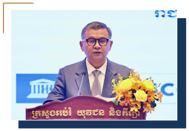

សម្រង់ប្រសាសន៍

«យើងរួមគ្នាលើកកម្ពស់គុណភាពអប់រំ ស្ដារប្រព័ន្ធអប់រំឡើងវិញ ដើម្បីពង្រឹងវិស័យអប់រំ និងកសាងអនាគតកម្ពុជា តាមរយៈ៖
- (១)ការបណ្តុះបណ្តាលសតវត្សទី២១
- (២)ការពង្រឹងចំណេះដឹង និងវិធីសាស្ត្ររបស់គ្រូបង្រៀន ដើម្បីបង្កើនពិន្ទុវាយតម្លៃ PISA
- (៣)ការលើកកម្ពស់ការសិក្សាស្រាវជ្រាវ ក្នុងយុគសម័យ AI និងឌីជីថល
- (៤)ការកសាងសមត្ថភាពគ្រូបង្រៀន កម្ពុជា ២០៥០ និងវិស័យអប់រំបរិយាបន្ន»
ចំណារដ៏ខ្ពង់ខ្ពស់នៃ
ឯកឧត្តមបណ្ឌិតសភាចារ្យ ហង់ជួន ណារ៉ុន
ឧបនាយករដ្ឋមន្ត្រី
រដ្ឋមន្ត្រីក្រសួងអប់រំ យុវជន និងកីឡា